생물분류기사(동물) (2009-05-10 기출문제)
1과목: 계통분류학
1. 다음의 진화의 종류에 관한 설명이다. ( )안에 가장 알맞은 것은?
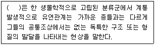
- radical evolution
- parallel evolution
- biological evolution
- systematic evolution
(정답률: 56%)

2. Whittaker의 5계 분류체계 중 다음 계에 해당하는 것은?
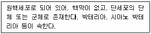
- Fungi
- Monera
- Plantae
- Prostista
(정답률: 54%)
3. 다음 중 박벽포자낭을 갖는 양치식물은?
- 물부추
- 네가래
- 고사리삼
- 속새
(정답률: 40%)
4. 다음 중 생물의 분류계급에 대한 순서로 옳은 것은?
- 종＜아속＜족＜상과＜과＜아강＜계
- 종＜아종＜과＜목＜강＜아강＜문＜계
- 종＜아속＜속＜상과＜아문＜목＜계
- 아종＜종＜족＜아강＜강＜아문＜계
(정답률: 53%)
5. 다음 중 피자식물에 있어 소포자낭(microsporangium)에 해당하는 것은?
- 화사(수술대)
- 자방(씨방)
- 주두(암술머리)
- 약(꽃밥)
(정답률: 65%)
6. 식물의 일반적인 진화 경향성에 관한 설명으로 가장 거리가 먼 것은?
- 배가 작고, 배유가 있는 종자는 배유가 없는 종자보다 원시적이다.
- 씨방의 위치는 상위가 하위보다 원시적이다.
- 수술은 수가 적고 합쳐진 것이 수가 많고 떨어진 것보다 원시적이다.
- 꽃은 방사대칭형이 좌우대칭형보다 원시적이다.
(정답률: 34%)
7. 다음 중 외국에서 귀화한 대표적인 식물종은?
- 물푸레나무
- 오갈피나무
- 갯쑥부쟁이
- 개망초
(정답률: 62%)
8. 다음 중 윤형동물(Rotifera)의 특징들로 가장 적합하게 구성된 것은?
- 이배엽, 의체강, 신관, 섬모관
- 이배엽, 무체강, 원신관, 단위생식
- 삼배엽, 점착선, 섬모관, 인두 저작기
- 삼배엽, 진체강, 신관, 섬모관
(정답률: 50%)
9. 극피동물의 특징인 수관계(water-vascular system)의 기능으로 거리가 먼 것은?
- 운동 기능
- 호흡 기능
- 배설 기능
- 감각 기능
(정답률: 64%)
10. 다음은 연체동물에 관한 설명이다. ( ① )안에 알맞은 용어는?
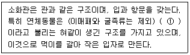
- slug
- mantle
- intestine
- radula
(정답률: 60%)
11. 다음 중 유형동물의 특징으로 거리가 먼 것은?
- 소화관은 완전한 경로를 가진다.
- 문강과 구문을 가진다.
- 체절성이며, 신경계가 없다.
- 혈관계가 있다.
(정답률: 62%)
12. 다음 중 우상복엽이 아닌 식물은?
- 가죽나무
- 산초나무
- 침엽수
- 가래나무
(정답률: 57%)
13. 편형동물의 흡충강이 촌충강과 뚜렷하게 다른 점은?
- 소화관이 있다.
- 가생생활을 한다.
- 배설계는 원신관이다.
- 표피가 없다.
(정답률: 45%)
14. 다음 중 척삭의 주요 기능에 해당하는 것은?
- 말초신경의 역할을 한다.
- 근육의 부착축이 된다.
- 심장의 기능을 돕는다.
- 소화 기능을 돕는다.
(정답률: 77%)
15. 다음 중 잉어목 어류에서 부레와 내이를 연결하여 소리 감지에 관여하는 것은?
- 웨베르기관(weberian apparatus)
- 부레관(air bladder tube)
- 인두열(pharyngeal cleft)
- 유문낭(pyloric bag)
(정답률: 69%)
16. 다음 중 피자식물이 나자식물에 비해 보다 다양한 환경에 적응하면서 우점적 위치를 차지하는데 기여한 주요 요인으로 가장 거리가 먼 것은?
- 통수요소로 도관절세포가 있어 효율적으로 물을 수송할 수 있다.
- 배주가 나출되어 있지 않고 심피에 둘러싸여 있다.
- 보다 다양한 매개자를 통해 수분(pollination)이 일어난다.
- 중복수정을 하지 않으며, 수정 후 접합자가 방출되지 않고 그대로 배로 발달한다.
(정답률: 78%)
17. 다음 식물과 중 대부분의 종이 방사상칭꽃이 아닌 것은?
- 물푸레나무과(Oleaceae)
- 두릅나무과(Araliaceae)
- 현삼과(Scrophulariaceae)
- 차나무과(Theaceae)
(정답률: 65%)
18. 다음 ( )안에 들어갈 가장 적합한 용어는?
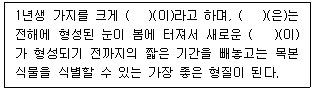
- bud
- twig
- spur
- pith
(정답률: 69%)
19. 다음 계통분류에 사용되는 용어 중 ( )안에 가장 적합한 것은?
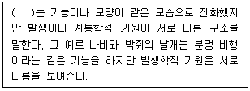
- hyphothesy
- ancestosy
- homology
- homoplasy
(정답률: 87%)
20. 상동과 상사에 대한 다음 설명 중 틀린 것은?
- 상동은 분류학에서 계통발생적 기원이 동일한 기관간의 관계를 말한다.
- 새와 나비의 날개는 상사의 대표적인 예이다.
- 상사는 외관이나 기능은 비슷하나 발생기원이 다른 기관을 말한다.
- 어류와 파충류의 비늘은 상동의 대표적인 예이다.
(정답률: 73%)
2과목: 환경생태학
21. 생태적 천이가 외부의 힘이 아닌 군집이나 군집을 구성하는 생물에 의한 자체적인 요인으로 일어난 경우를 무엇이라 하는가?
- 자생천이(autogenic succession)
- 타생천이(allogenic succession)
- 기본천이(fundamental succession)
- 실현천이(realized succession)
(정답률: 95%)
22. 지구온난화와 관련한 설명으로 가장 거리가 먼 것은?
- 지구 온난화로 인해 해수면이 상승할 것이다.
- 지구온난화는 여러 지역에서 강우 패턴을 변화시켜 더욱 빈번하게 가뭄이 일어나게 하거나, 동시에 다른 지역에서는 홍수가 빈번하게 일어나기도 한다.
- 온실기체 중 지구온난화에 대한 기여도가 가장 큰 것은 CFC(약 50% 정도)이고, 그 다음으로 CH4＞N2O 순이다.
- 온난화대책 등과 관련한 주요 국제 환경협약으로는 교토의정서 등이 있다.
(정답률: 100%)
23. 두 생물 종 사이에 나타나는 상호작용에 관한 설명으로 거리가 먼 것은? (단, 상호작용의 영향은 (-) 부정적, (0) 중립적, (+) 긍정적)
- 경쟁(0 +): 두 개체군이 서로를 억제하나, 한 종에게는 이득이 된다.
- 포식(+ -): 포식자에게는 긍정적이고 피식자에게는 부정적이다.
- 기생(- +): 숙주에게는 부정적이고 기생충에게는 긍정적이다.
- 편리공생(+ 0): 한 종에게는 이익이 되고 다른 종에게는 영향이 없다.
(정답률: 88%)
24. 다음은 현존식생에 관한 설명이다. ( )안에 들어갈 말로 가장 거리가 먼 것은?
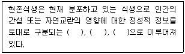
- 자연식생(natural vegetation)
- 이차식생(secondary vegetation)
- 대상식생(substitute vegetation)
- 고식생(paleotic vegetation)
(정답률: 94%)
25. 개체군에서의 무서열 경쟁은 승자에 의한 자원의 독점이 일어나지 않는다. 다음 중 제한된 자원의 존재하에서 무서열 경쟁의 밀도와 시간과의 관계를 바르게 표현한 것은?
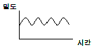
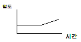
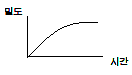
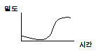
(정답률: 54%)
26. 내성의 법칙에 관한 다음 설명 중 옳지 않은 것은?
- 자연계의 많은 생물들이 실제적으로 개개의 물리적 요인에 대하여 최적 범위내에서 생활하고 있지 않다.
- 하나의 생태적 요인에 대하여 그 조건이 어떤 종에 최적이 되지 않을 경우, 다른 생태적 요인에 대한 내성이 약화될 수 있다.
- 재생개체, 종자, 잎, 묘, 유충의 내성에 대한 한도는 일반적으로 성숙된 식물이나 동물보다 광범위하고, 감수성은 작다.
- 유생기(幼生期)는 보통 여러 환경요인에 대한 내성이 좁다.
(정답률: 72%)
27. 다음 중 광화학스모그의 주요 원인물질을 나열한 것으로 가장 적합한 것은?
- Cr, CO, EDTA
- NOx, olefin계 HC, 햇빛
- 햇빛, 석면, Hg
- Cd, Dioxin, 햇빛
(정답률: 71%)
28. 습지생태계에 대한 설명 중 틀린 것은?
- 조류에 의해 해안 평야지대의 강을 따라 생기는 담수습원의 생물들은 조석에 따른 이익을 취하며 염분에 의한 스트레스를 받지 않는 편이다.
- 염습원에서는 주로 발효 미생물들과 메탄형성 미생물들이 우세하게 나타나는 반면, 담수습원에서는 황화수소를 생성하는 혐기성 미생물들이 우세하게 나타난다.
- 담수수습원은 고등식물과 동물의 다양성이 연안의 염습원보다 크다.
- 일반적으로 염습원에서의 1차생산은 어류, 새우류와 같은 수생동물들에 축적되는 반면, 담수습원엣는 양서류, 파충류 등의 반수생 생물들과 오리 등의 조류에 더 많이 축적되는 경향이 있다.
(정답률: 54%)
29. 다음 오염물질 중 ( )안에 가장 적합한 것은?
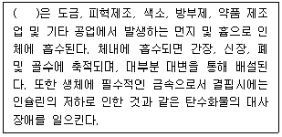
- 납화합물
- 수은화합물
- 크롬화합물
- 비소화합물
(정답률: 90%)
30. 생활사에 따른 두 가지 생물유형 중 K-선택생물에 대한 설명으로 가장 적합한 것은?
- 종간 또는 종내 경쟁이 다양하나 심하지 않다.
- 어릴때 높은 사망률을 나타내고 그 이후에는 높은 생존을 보인다.
- 개체군 증가율이 높고, 한 번 생식을 한다.
- 체형이 크고, 지연된 생식을 한다.
(정답률: 50%)
31. 질소의 순환에 관한 설명 중 옳지 않은 것은?
- 질소는 번개에 의한 격렬한 방법이나 질소 산화물처럼 어떤 오염물질에 대한 태양의 광화학작용에 의해서도 고정될 수 있다.
- 탈질세균은 질산성 질소를 탈질과정을 통해 질소분자로 환원한다.
- 식물은 토양으로부터 주로 아질산이온을 흡수하여 단백질을 합성한다.
- 콩과식물은 질소고정 박테리아에 아주 좋은 서식처이다.
(정답률: 56%)
32. 총면적 10km2인 어느 지역 중 산지 면적이 2km2 이다. 이 산지 내에 50본의 소나무와 100본의 참나무가 있을 때, 참나무의 생태밀도(ecological density)는?
- 10본/ km2
- 25본/ km2
- 50본/ km2
- 100본/ km2
(정답률: 58%)
33. 주로 자동차 배기가스, 연료 연소공장 등에서 발생되고, 메트헤모글로빈을 형성하여 산소전달을 방해하며, 특히 대기 중의 VOCs와 결합하여 생성된 광산화물질은 눈, 호흡조직, 피부 등의 연약한 부위에 심각한 영향을 미치는 대기 오염물질에 해당하는 것은?
- 황산화물
- 질소산화물
- 폼알데하이드
- 폴리클로리네이티드비페닐
(정답률: 58%)
34. 생태계세서 에너지 안정산태에 관한 설명으로 옳지 않은 것은?
- 군집의 호흡량을 초과하여 축적되는 생산량을 군집순생산량이라 하고, 안정생태계의 군집순생산량은 1 이다.
- 안정상태의 군집은 총광합성량과 총 호흡량의 비율(P/R ratio)이고 1보다 크면 독립영양군집이다.
- 소나무 조림지에서와 같이 천이의 초기군집은 P/R 비율이 1보다커서 독립영양군집을 이룬다.
- 강의 상류는 육상생태계에서 규칙적으로 유기물이 유입되나 세균 등에 의해 소비되는 양이 많아 대부분 P/R 비율은 1보다 적으나, 강의 종류는 식물생산량이 증가되어 1 보다 커진다.
(정답률: 32%)
35. 생태계의 물질 순환에 관한 설명으로 옳지 않은 것은?
- 탄소의 순환에서 탄소의 가장 큰 저장고 역할을 하는 부분은 대기이다.
- 황은 생물의 필수원소 중의 하나이며, 독립영양생물이 환원하여 이용할 수 있는 형태로 된 다음, 황을 가진 아미노산과 각종 단백질에 포함된다.
- 생물계로 들어온 질소는 식물에 흡수되기 전에 질소를 제거하는 박테리아의 활동으로 대기에 되돌려 주기도 하는데 이를 탈질작용이라고 한다.
- 인이 생태계에 유입되는 경로는 바다에 침전된 지각변동으로 육상으로 올라오거나, 해양생물 또는 플랑크톤을 먹는 새들이 배설에 의해 되돌려 놓는 경우 등에 한정된다.
(정답률: 50%)
36. 다음 중 열대우림의 종다양성 특징으로 가장 적합한 것은?
- 낮은 우점도와 많은 생물종
- 낮은 우점도와 적은 수의 생물종
- 높은 우점도와 많은 생물종
- 높은 우점도와 적은 수의 생물종
(정답률: 54%)
37. 다음 중 우점도를 비교하는데 일반적으로 사용되는 지수로서 각 종류에 대한 비를 제곱하여 합함으로써 산출되는 것은?
- 알리(Allee)지수
- 심프슨(Simpson)지수
- K-전략지수
- r- 전략지수
(정답률: 86%)
38. 어느 개체군의 성장이 S자형 곡선에 의해 결정되어 진다고 가정할 때, 다음과 같은 조건에서 개체군의 성장률은 얼마인가?
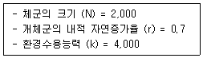
- 350
- 700
- 1,000
- 1,500
(정답률: 39%)
39. Deevey가 제시한 생존곡선의 3가지 유형 중 인간, 대형동물 등이 갖는 생존곡선 유형은? (단, 가로축은 수명에 대한 생존비율(%), 세로축은 생존 개체수(대수눈금) 이다.)
- 수직형
- 오목형
- 불록형
- 계단형
(정답률: 77%)
40. 다음 설명하는 오염물질로 가장 적합한 것은?
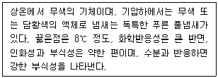
- HCHO
- HCN
- COCl2
- NO2
(정답률: 65%)
3과목: 형태학
41. 밑씨가 심피에 붙는 위치를 무엇이라 하는가? (단, 이위치는 식물분류에 중요한 형질로 이용된다)
- 태좌
- 합점
- 씨방
- 주공
(정답률: 45%)
42. 조류에 관한 일반적인 설명으로 가장 거리가 먼 것은?
- 갈비뼈는 작고 가슴뼈는 잘 발달한 편이다.
- 피부는 얇고 땀샘을 각지 않는다.
- 발을 보통 5개의 발가락을 가진다.
- 골격은 완전하게 골화되어 있고 뼈 속은 비어 있다.
(정답률: 95%)
43. 다음 중 메뚜기목에 속하지 않은 것은?
- 풀무치
- 사마귀
- 귀뚜라미
- 땅강아지
(정답률: 95%)
44. 존스톤 기관 (Johnston's organ)은 곤충류에서 발견되어 이름 지어진 기관이다. 다음 중 어떤 기관이 여기에 속하는가?
- 소화기관
- 청각기관
- 신경기관
- 발음기관
(정답률: 72%)
45. 다음 중 측근은 주로 어디에서 분화하는가?
- 외피
- 내초
- 피층
- 유관속형성층
(정답률: 80%)
46. 세포의 1차벽의 일부분만이 비후한 조직은?
- meristematic tissue
- collenchyma
- sclerenchyma
- vascular tissue
(정답률: 36%)
47. 절지동물(Arthropoda)의 형태적 특징에 대한 설명으로 틀린 것은?
- 몸은 좌우대칭이며, 체절적 구조이다.
- 기틴이나 탄산칼슘으로 된 외골격을 가진다.
- 체절마다 관절이 있는 부속지를 가진다.
- 심장은 판상구조이며, 혈관은 길다.
(정답률: 75%)
48. 다음은 다모강에 관한 설명이다. ( )안에 가장 알맞은 것은?
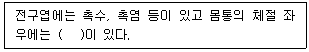
- 액각
- 촉사
- 안점
- 측각
(정답률: 94%)
49. 연체동물의 일반적인 형태적 특징에 관한 설명으로 옳지 않은 것은?
- 보통 체절을 가지며, 체강이 발달되어 있다.
- 가스교환은 아가미, 폐, 외투막 및 체표에서 이루어 진다.
- 개방혈관계 또는 폐쇄혈관계를 가지며 심장, 동맥, 정맥, 혈동으로 구성된다.
- 1~2개의 신관이 위심강으로 열리며, 배설물은 외투강으로 배설된다.
(정답률: 80%)
50. 동물의 조직은 결합조직, 상피조직, 근육조직, 신경조직으로 구분할 때 다음 중 결합조직에 해당하지 않은 것은?
- 지방조직
- 혈액
- 골격근
- 뼈
(정답률: 39%)
51. 다음 중 나이테가 형성되는 부위는?
- 1기 물관부
- 2기 물관부
- 원생물관부
- 후생물관부
(정답률: 58%)
52. 성숙한 사관절 세포에서 볼 수 없는 것은?
- 칼로스(callose)
- 핵
- P-protein
- 원형질안락사
(정답률: 50%)
53. 포유류의 심장혈관계에 대한 설명 중 옳은 것은?
- 심장박동의 근원은 우심실의 방실결절에서 시작된다.
- 심장주기 중 수축기에는 반월판막이 열리고, (삼첨판, 이천판)이 닫힌다.
- 모세혈관은 가늘기 때문에, 압력에 견디기 위해 탄성섬유룰 많이 포함하고 있다.
- 우심실에서 폐로 연결된 혈관의 명칭은 폐정맥이다.
(정답률: 56%)
54. 다음 설명에 해당하는 신경계는?
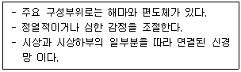
- 체성신경계
- 자율신경계
- 대뇌신경계
- 교감신경
(정답률: 53%)
55. 식물에서 하나의 정세포와 2개의 극핵이 결합되면 무엇이 만들어지는가?
- 2배체 초기 배젖핵
- 3배체 초기 배젖핵
- 2배체 접합자
- 3배체 적합자
(정답률: 77%)
56. 다음 보기 중 수생식물에 대한 설명으로 옳은 것은?
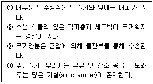
- ①, ②
- ③, ④
- ①, ③
- ②, ④
(정답률: 34%)
57. 쌍떡잎식물 잎의 해면성 엽육(mesophyll)은 주로 무엇으로 이루어졌는가?
- 표피세포(epidermal cells)
- 후각조직(collenchyma)
- 유조직(parenchyma)
- 후벽조직(sclereid)
(정답률: 57%)
58. 통수요소 (도관절 및 가도관)의 측벽에 2차벽 물질이 두껍게 쌓이면 세포벽이 더 튼튼하게 보강되어 붕괴의 위험에 대처할 수 있다. 다음 중 측벽의 비후 유형이 튼튼해지는 순서되로 나열된 건은?
- 환상-계단상-나선상-벽공상-망상
- 환상-나선상-계단상-망상-벽공상
- 환상-벽공상-나선상-계단상-망상
- 환상-망상-계단상-나선상-벽공상
(정답률: 62%)
59. 다음 중 꽃밥에서 감수분열을 거쳐 4개의 포자를 만들어내는 세포는?
- 소포자모세포(microspore mother cell)
- 화분관세포(tube cell)
- 생식세포(generayive cell)
- 대포자모세포(megaspore mother cell)
(정답률: 58%)
60. 식충식물은 곤충을 잡아 소화시켜서, 질소원을 얻기 위한 것으로 진화되었다. 이 식물이 곤충을 잡기 위한 장치는 어떤 기관(organ)이 변형된 것인가?
- 줄기(stem)
- 잎(leaf)
- 꽃(flower)
- 뿌리(root)
(정답률: 59%)
4과목: 보존 및 자원생물학
61. 샤퍼(Shaffer)가 주장한 최소생존개체군(MVP: minmum viable population)에 관한 설명으로 가장 적합한 것은?
- 앞으로 예견되는 많은 변화에도 불구하고 앞으로 500년 동안의 생존확율이 99%인 개체군의 최소 크기
- 인위적으로 관리할 경우 앞으로 500년 동안의 생존확률이 99%인 개체군의 최소 크기
- 앞으로 일어날 변화를 예견하고 이 변화에서 개체군내 유전변이를 유지시키기 위해 필요한 개체군의 최소 크기
- 인위적으로 관리할 경우 개체군내 유전변이를 유지시키기 위해 필요한 최소한의 개체군 크기
(정답률: 62%)
62. 도서 생물 지리설에 근거한 보호지구 설계원리에 대한 설명 중 옳지 않은 것은?
- 좁은 보호 지구보다는 넓은 보호 지구가 좋다.
- 하나의 큰 면적보다는 여러 개의 작은 면적이 좋다.
- 선형의 서식지에서 공유가 적은 경우보다는 서식지를 서로 공유하는 경우가 좋다.
- 원형의 형태가 좋다.
(정답률: 90%)
63. 생물다양성과 관련된 다음의 용어 설명으로 거리가 먼 것은?
- 감마다양성(gamma diversity) - 똑같은 서식처 간 또는 지리적인 지역 간의 거리에 대한 어느 한 종의 회전율
- 천이(succession) - 자연적으로 또는 인간이 생물군집을 교란하여 생겨나는 종의 조성, 군집구조, 물리적 특징 등의 점지적인 변화
- 베타 다양성(beta diverstiy) - 종 조성이 다양한 환경 기울기에 따라 변화하는 정도를 나타내는 것
- 자매종(sibling species) - 형태 및 생리학적 구분이 용이하고, 생물학적으로 완전히 격리 되어 둘 간의 교배가 이루어지지 않는 종
(정답률: 88%)
64. 다음 중 생물다양성에 부여되는 적집경제가치(direct economic values)에 해당하는 것은?
- 소비적 사용가치
- 미물적 사용가치
- 선택가치
- 존재가치
(정답률: 71%)
65. 국내의 고유종과 희귀종, 법적으로 보호가 필요한 종들을 보전하기 위한 보전활동에 관한 설명으로 가장 거리가 먼 것은?
- 희귀한 생물이 살거나 민감한 군집이 있는 지역을 적극 개발하고, 생태 보전지의 생태학적 중재는 불필요하다.
- 희귀하고 위태로운 종과 군집에 대한 감시와 연구를 한다.
- 보전의 중요성에 대한 대중의 인식을 강화한다.
- 기금 모금 및 제공 등은 보전활동에 기여한다.
(정답률: 92%)
66. 생물다양성 보전은 매우 중요한 환경적 현안으로 대두되었으며 이와 함께 생물다양성 개념은 보다 명확히 정의되었다. 다음 중 생물다양성이 3가지 의미와 가장 거리가 먼 것은?
- 유전적 다양성
- 종 다양성
- 군집 및 생태적 다양성
- 진화적 다양성
(정답률: 69%)
67. 군집은 독자적인 영양구조로 에너지의 흐름 등의 기능적 특성과 군집을 이루는 종조성 등 구조상이 특징도 갖추고 있다. 다음 중 군집과 관련된 용어의 설명으로 가장 거리가 먼 것은?
- 우점종: 일정한 지역의 군집 내에서 중요한 역할을 수행하고, 다른 종에 영향을 크게 미치는 종
- 개척군집: 새로 형성된 사주나 노천채광으로 형성된 나지와 같이 생물이 없는 지역에 처음으로 형성되는 군집
- 천이: 시간이 지남에 따라 한 지역에서 상이한 군집이 연속적으로 변화하는 과정
- 개체군: 규모가 크고, 고도로 조직화되어 독립성이 매우 강한 군집
(정답률: 74%)
68. 보호지구 설정시 면적이 넓게 보호지구를 설정할 때의 장점으로 가장 거리가 먼 것은?
- 가장자리 효과의 최소화
- 단편화 영향의 증가
- 교란에 의존하는 생물들에게 자연교란에 가까운 체제제공
- 대수층과 호수 수질보호에 유리
(정답률: 83%)
69. 지구 온난화는 기후적 변화를 일으킬 수 있으며 이는 동식물 서식지의 변화를 야기하게 되는데, 이 기후변화와 생물 다양성의 관계를 설명한 것으로 옳은 것은?
- 온도가 상승함에 따라 사과 등 작물의 재배가능 한계선은 현재보다 남쪽으로 확장되며, 특히 종자식물들의 멸종으로 이어질 수 있다.
- 식생대의 단순화로 인해 식물종들 간의 경쟁작용을 높여 열세종의 도태를 증가시키므로, 생물 상호작용으로 인한 다양성 감소현상은 가속화 된다.
- 이산화탄소 농도의 증가는 상대적으로 질소량의 증가를 유발하여, 식물체의 비료성분을 공급하여 줌으로써 식물체의 질적 상태를 개선시킨다.
- 지구온난화에 대한 기여도가 가장 큰 물질은 SO2, CO 등이 대표적이며, 이 물질은 성층권에 도달하여 오존층을 파괴하여 식물의 생장에 큰 영향을 미친다.
(정답률: 77%)
70. 다음은 국제자연보전연맹-세계보전연맹(IUCN)이 분류한 보호지구 중 하나에 대한 설명이다. ( ) 안에 가장 적합한 것은?
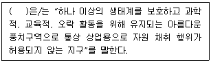
- 자원 보호지구(resources preserve area)
- 국립생물관리 보전구역(natural biotic preserve area)
- 국립공원(national parks)
- 제한 관리특구(restrict managed sanctuaries)
(정답률: 75%)
71. 식물보전센타에서 위험종의 유전변이 보존을 위한 표본 추출지침 중 종수준에서 수집하고자 할 때 우선적으로 수집하여야 할 종으로 가장 거리가 먼 것은?
- 절멸의 위험이 있는 종
- 진화적 및 분류학적으로 유일한 종
- 자연으로 재도입될 수 있는 종
- 최근에 신종으로 확인된 종
(정답률: 48%)
72. 생물다양성에 관한 다음 설명 중 옳은 것은?
- 생물학적 다양성은 고등 동식물에 존재하는 유전자의 다양성에 한정된다.
- 지구상에 존재하는 생물종은 보고된 것과 추정된 종을 합하여 약 100만 종이다.
- 생물다양성은 자연의 생산력과도 깊은 상관성을 지니고 있다.
- 군집 내 생물간의 상호작용이 다양하면 서로 경쟁하여 생태계 기능이 저하된다.
(정답률: 71%)
73. 생물다양성에 대한 설명으로 가장 거리가 먼 것은?
- 생물다양성은 종 수준에서의 다양성을 포함하며, 이는 가장 하등한 종류부터 가장 고등한 종류까지의 모든 종들을 대상으로 한다.
- 생물다양성은 집단의 유전적 다양성까지 포함하며, 유전적 다양성이 클수록 집단은 생물다양성의 측면에서 보다 안정적이다.
- 생물다양성은 열대보다는 냉대지역이, 지질학적으로 연령이 낮은 신생지역이 생물다양성이 높다.
- 생물다양성은 생물의 다양한 군집과 이를 포함하는 생태계의 다양성을 포함한다.
(정답률: 82%)
74. 종의 보존에 중요한 역할을 하는 식물 종자은행에 관한 설명으로 거리가 먼 것은?
- 종자의 질 저하를 막기 위해 저장된 종자를 정기적으로 발아시켜 완전한 식물로 키운 후 다시 새로운 종자를 얻어 저장시켜야 할 필요가 있다.
- 저장기간이 길어질수록 유해한 돌연변이가 누적된다.
- 저장기간이 길어질수록 발아력은 점차 낮아진다.
- 세계식물종이 약 95%정도가 종자의 휴면이 없고 저온저장조건에 견디지 못하는 난저장성(recalcitrant)이므로 다른 종자와 함께 종자은행에 저장하는 것이 불가능하다.
(정답률: 83%)
75. 다음 멸종속도와 관련한 설명으로 가장 적합한 것은?
- 현재 일어나고 있는 멸종의 대부분은 인위적인 영향이라기보단 자연적인 영향에 의한 것이다.
- 인류 역사상 멸종이 가장 심각하게 일어난 곳은 도서라고 볼 수 있다.
- 구대륙 열대림 국가에서 원시림 서식지 손실비율이 가장 큰 나라는 짐바브웨이다.
- 대륙종이 해양종보다 문(phylum) 단계에서 다양성이 높아 몇 개의 대륙종이 멸종되어도 생물다양성에 막대한 손실을 가져온다.
(정답률: 57%)
76. 현재 전세계적으로 생물다양성 손실에 가장 큰 영향을 미치는 것은?
- 서식처의 파괴
- 야생생물의 과도한 수렵 및 채취
- 수질환경오염
- 대기환경오염
(정답률: 86%)
77. 관심있는 희귀종의 현황파악을 위해 사용되는 개체군의 감시에 관한 연구방법으로 가장 거리가 먼 것은?
- 개체군 내 개체들에 대한 생장, 생식, 생존률 조사
- 개체군안의 전체 개체수에 대한 주기적인 반복조사
- 군집안의 종의 밀도를 추정하기 위한 반복적인 표본 추출
- 개체수 조사기간 동안의 단기적인 통계기록 조사
(정답률: 86%)
78. 야생생물 서식지 단편화가 초래하는 결과에 대한 설명으로 가장 거리가 먼 것은?
- 서식지의 단편화로 인해 야생 개체군이 사육 동물이나 식물과 접촉하는 기회가 생기게 된다.
- 단편화된 서식지는 면적당 임연부의 면적이 많아지고 종의 영속성을 촉진한다.
- 서식지의 단편화는 내부 서식지에 비해 가장 자리의 면적을 상대적으로 급격히 증가시킨다.
- 산림이 단편화되면 산림 가장자리 지역의 바람이 강해지고 습도가 낮아지며 온다가 상승하여 산불이 발생할 가능성이 높아진다.
(정답률: 83%)
79. 특정오염물질은 지구 성층권의 오존층을 파괴하여 생물다양성 감소에 큰 영향을 미치고 있다. 다음 특정물질 중 오존 파괴지수가 가장 큰 물질은?
- CFC-114
- CFC-115
- HCFC-141
- Halon-1301
(정답률: 56%)
80. 보존 대상종을 구분하여 설명한 것으로 옳지 않은 것은?
- 희귀종(rare): 흔히 제한된 지리적 분포나 낮은 개체군 밀도로 인하여 개체의 수가 작은 종으로, 당장은 절멸위험에 직면하지 않겠지만 개체수 부족으로 위험종이 될 가능성이 존재한다.
- 취약종(vulnerable): 보존 대상에 속할 것으로 짐작되나 충분한 정보가 없어서 특정 범주로는 규정되지는 않지만, 전에 서식하던 장소나 기타의 가능 지역을 조사해 보아도 발견 가능성이 거의 없는 종을 의미한다.
- 위험종(endangered): 가까운 장래에 절멸 될 가능성이 큰 종으로 현재의 상황이 지속되면 종의 생존이 어려울 정도로 개체수가 감소된 종도 포함된다.
- 절멸종(extince): 자연계에 더 이상 존재하지 않는 것으로 알려진 종을 의미한다.
(정답률: 79%)
5과목: 자연환경관계법규
81. 자연환경보전법상 생태ㆍ자연도를 작성할 때 구분하는 지역 중 1등급 권역기준으로 거리가 먼 것은? (단, 그 밖에 생태적 가치가 있는 지역으로서 대통령령이 정하는 기준에 해당하는 지역은 제외한다.)
- 생태계가 특히 우수하거나 경관이 특히 수려한 지역
- 생물의 지리적 분포한계에 위치하는 생태계 지역 또는 주요 식생의 유형을 대표하는 지역
- 개발제한구역으로서 장차 보전의 가지가 있는 지역
- 멸종위기 야생 동ㆍ식물의 주요 생태축이 되는 지역
(정답률: 58%)
82. 다음은 개발제한구역의 지정 및 관리에 관한 특별조치법상 개발제한구역에서의 행위제한에 관한 내용이다. 밑줄친 “대통령령으로 정하는 규모기준”으로 옳은 것은?
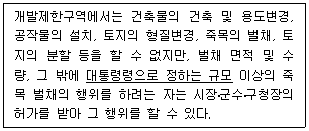
- 벌채면적 100제곱미터 또는 벌채수량 1세제곱미터
- 벌채면적 200제곱미터 또는 벌채수량 2세제곱미터
- 벌채면적 300제곱미터 또는 벌채수량 3세제곱미터
- 벌채면적 500제곱미터 또는 벌채수량 5세제곱미터
(정답률: 48%)
83. 산지관리법상“산지전용제한지역”이 될 수 없는 산지는?
- 주요 산줄기의 능선부로서 자연경관 및 산림생태계의 보전을 위해 필요하다고 인정되는 산지
- 지역주민의 임산물 소득 보전을 위해 필요한 산지
- 명승지, 유적지, 등 역사적 ㆍ 문화적으로 보전의 가치가 있다고 인정되는 산지
- 산사태 등 재해발생이 특히 우려되는 산지
(정답률: 57%)
84. 국토의 계획 및 이용에 관한 법률 시행령상 기반시설 중 세분화한 도로에 해당하지 않는 것은?
- 자전거전용도로
- 지하도로
- 보차혼용도로
- 고가도로
(정답률: 48%)
85. 산지관리법상 산지이용도를 구분할 때, 보전산지 중 “공익용 산지에 해당하지 않는 것은?
- 「사방사업법」에 의한 사방지의 산지
- 「수도법」에 의한 상수원보호구역의 산지
- 사찰림의 산지
- 「산림자원의 조성 및 관리에 관한 법률」 에 의한 임업진흥권역의 산지
(정답률: 29%)
86. 국토기본법에 명시된 국토종합계획에 관한 설명으로 틀린 것은?
- 국토해양부장관은 국토종합계획안을 작성한 때에는 공청회를 열어 국민 및 관계 전문가 의견을 청취하여야 하며 공청회를 개최하고자 할 경우 개최 14일전까지 개최에 필요한 사항 등을 공고 하여야 한다.
- 국토해양부장관은 국토종합계획을 수립하거나 확정된 계획을 변경하고자 할 때에는 국무회의의 심의를 거친후 대통령의 승인을 얻어야한다.
- 국토해양부장관은 국토종합계획의 평가결과와 사회적, 경제적 여건변화를 고려하여 5년마다 국토종합계획을 경제적 여건변화를 고려하여 5년마다 국토종합계획을 전반적으로 재검토하고 필요시 정비하여야 한다.
- 국무회의 심의안을 송부받은 관계중앙행정기관의 장은 특별한 사유가 없는 한 송부받은 날부터 60일 이내에 국토해양부장관에게 의견을 제시하여야 한다.
(정답률: 29%)
87. 개발제한구역의 지정 및 관리에 관한 특별조치법상 개발제한구역관리계획에 관한 설명으로 옳지 않은 것은?
- 개발제한구역관리계획은 5년 단위로 수립한다.
- 개발제한구역에서 1만제곱미터 이상(동일한 목적으로 수차에 걸쳐 부분적으로 형질변경하거나 연접하여 형질변경하는 경우 그 전체면적을 말한다)의 토지의 형질변경(토석의 채취를 포함)은 개발제한구역 관리계획수립대상에 해당한다.
- 개발제한구역관리계획은 시장ㆍ군수ㆍ구청장이 수립하여 시ㆍ도지사의 승인을 얻어야 한다.
- 도시계획시설 중 건축물의 건축연면적 또는 토지의 형질변경 면적의 10분의 1 이하의 증가 등과 같은 대통령령으로 정하는 경미한 사항의 변경은 승인을 받지 않아도 된다.
(정답률: 25%)
88. 다음은 자연환경보전법상 생태ㆍ자연도에 관한 설명이다. ( )안에 알맞은 것은?
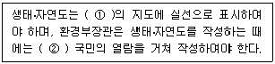
- ① 5만분의 1 이상, ② 7일 이상
- ① 5만분의 1 이상, ② 14일 이상
- ① 2만5천분의 1 이상, ② 7일이상
- ① 2만5천분의 1 이상, ② 14일 이상
(정답률: 54%)
89. 환경정책기본법령상 환경부장관이 특별대책지역내의 환경개선을 위해 토지이용과 시설설치를 제한할 수 있는 경우와 가장 거리가 먼 것은?
- 환경기준을 초과하게 되어 생물의 생육에 중대한 위해를 가져올 우려가 있다고 인정되는 경우
- 자연생태계가 심하게 파괴될 우려가 있다고 인정되는 경우
- 식생의 발육을 일정기간 제한할 필요가 있는 경우
- 수역이 특정유해물질에 의하여 심하게 오염된 경우
(정답률: 58%)
90. 국토의 계획 및 이용에 관한 법률 시행령상 ( )안에 들어갈 지구로서 가장 적합한 것은?
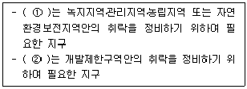
- ① 보전취락지구, ② 집단취락지구
- ① 보전취락지구, ② 개발취락지구
- ① 자연취락지구, ② 개발취락지구
- ① 자연취락지구, ② 집단취락지구
(정답률: 35%)
91. 습지보전법규상 습지보호지역 중 4분의 1일상에 해당하는 면적의 습지를 불가피하게 훼손하게 되는 경우에는 당해 습지보호지역 중 존치해야하는 비율(기준)은?
- 지정 당시의 습지보호지역 면적의 10분의 이상
- 지정 당시의 습지보호지역 면적의 4분의 1이상
- 지정 당시의 습지보호지역 면적의 3분의 1이상
- 지정 당시의 습지보호지역 면적의 2분의 1이상
(정답률: 50%)
92. 야생동ㆍ식물보호법상 수렵면허에 관한 사항으로 옳지 않은 것은?
- 수렵면허는 그 주소지를 관할하는 시장ㆍ군수ㆍ구청장으로부터 받는다.
- 제1종 수렵면허는 총기를 사용하는 수렵과 관련한 면허이다.
- 제2종 수렵면허는 수렵도구를 사용하지 않는 수렵활동과 관련한 면허이다.
- 규정에 의해 수렵면허를 받은 자는 환경부령이 정하는 바에 따라 5년마다 수렵면허를 갱신하여야 한다.
(정답률: 42%)
93. 야생동ㆍ식물보호법상 멸종위기야생동ㆍ식물Ⅱ급을 포획ㆍ채취ㆍ훼손하거나 고사시킨자에 대한 벌칙기준으로 옳은 것은?
- 7년 이하의 징역 또는 5천만원 이하의 벌금
- 5년 이하의 징역 또는 3천만원 이하의 벌금
- 3년 이하의 징역 또는 2천만원 이하의 벌금
- 2년 이하의 징역 또는 1천만원 이하의 벌금
(정답률: 29%)
94. 환경정책기본법령상 하천의 수질 및 수생태계 기준값으로 옳은 것은? (단, 사람의 건강보호 기준, 음이온계면활성제(ABS), 단위는 mg/L)
- 검출되어서는 안됨(검출한계 0.01)
- 0.⑤ 이하
- 0.1 이하
- 0.5 이하
(정답률: 47%)
95. 환경정책기본법령상 다음 오염물질 중 대기환경 기준이 화학발광법 의한 24시간 평균치로써 0.06 ppm 이하인 것은?
- 이산화질소(NO2)
- 오존(O3)
- 아황산가스(SO2)
- 일산화탄소(CO)
(정답률: 41%)
96. 농지법상 농업진흥구역안에서 가능한 토지이용 행위에 속하지 않는 것은?
- 폐수배출시설의 설치
- 국방, 군사시설의 설치
- 비석이나 기념탑의 설치
- 어린이놀이터 설치
(정답률: 58%)
97. 자연공원법령상 공원관리청이 공원구역에서 행위 허가를 함에 있어 공원심의위원회 심의를 거쳐야 하는 경우(기준)에 해당하지 않는 것은?
- 부지면적이 2천제곱키터 이상인 시설을 설치하는 경우
- 도로 ㆍ 철도 ㆍ 삭도 ㆍ 궤도 ㆍ 등의 교통ㆍ 운수시설을 1킬로미터 이상 신설하거나 1킬로미터 이상 확장 또는 연장하는 경우
- 만수면적이 10만제곱미터 이상이거나 총저수량이 100만세제곱미터 이상이 되는 댐 ㆍ 하구언 ㆍ 저수지 ㆍ 보 등 수잔원개발사업을하는 경우
- 1천제곱미터 이상의 개간ㆍ 매립ㆍ 간척 그 밖의 토지형질변경을 하는 경우
(정답률: 34%)
98. 야생동ㆍ 식물보호법규상 멸종위기야생동 ㆍ 식물 Ⅱ급에 해당하는 것으로만 구성되어 있는 것은?
- 삵, 두루미, 긴꼬리투구새우, 제주고사리삼
- 가창오리, 암매, 산굴뚝나비, 노랑붓꽃
- 호사비오리, 모래주사, 물장군, 독미나리
- 개구리매, 비단벌레, 저어새, 개병풍
(정답률: 40%)
99. 백두대간 보호에 관한 볍률상 핵심구역안에서 규정을 위반하여 허용되지 않는 행위를 한 자에 대한 벌칙기준으로 옳은 것은?
- 10년 이하의 징역 또는 7천만원 이하의 벌금
- 7년 이하의 징역 또는 5천만원 이하의 벌금
- 5년 이하의 징역 또는 3천만원 이하의 벌금
- 3년 이하의 징역 또는 2천만원 이하의 벌금
(정답률: 8%)
100. 산지관리법령상 중앙산지관리위원회 위원 자격 요건으로 가장 거리가 먼 것은? (단, 그 밖의 경우 등은 제외)
- 대학에서 조교수인 자
- 박사학위 취득 후 연구경험이 3년 있는 자
- 석사학위 취득 후 연구경험이 6년 있는 자
- 국가기술자격법에 따른 기술사 자격 취득 후 3년 실무경험이 있는 자
(정답률: 19%)